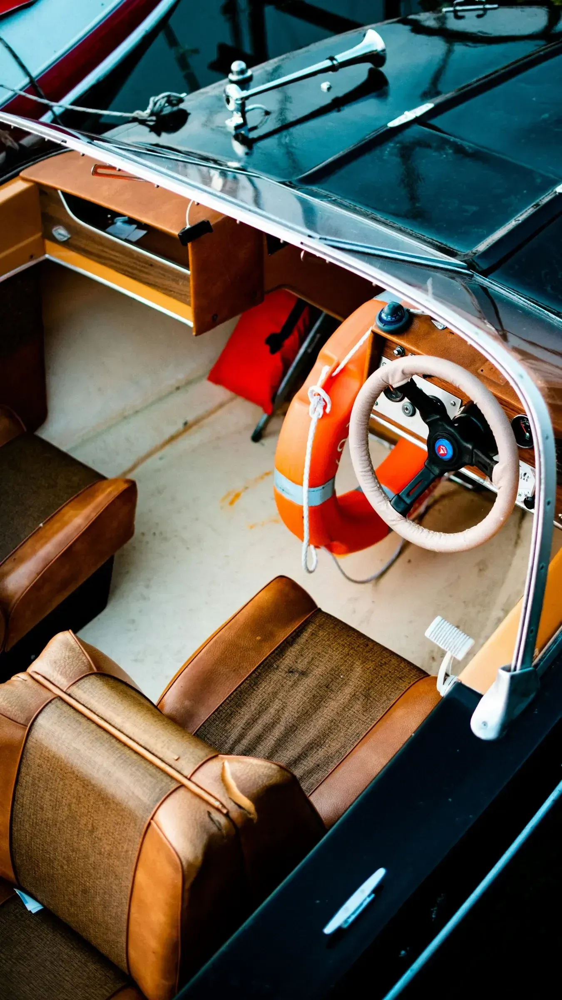
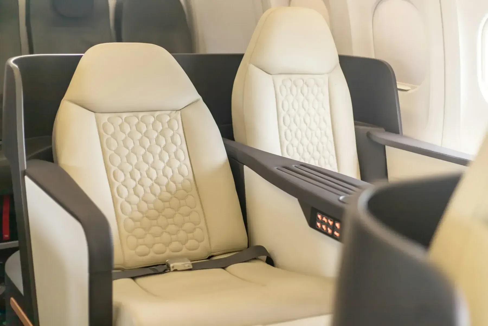
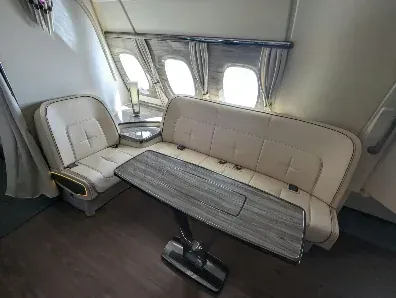
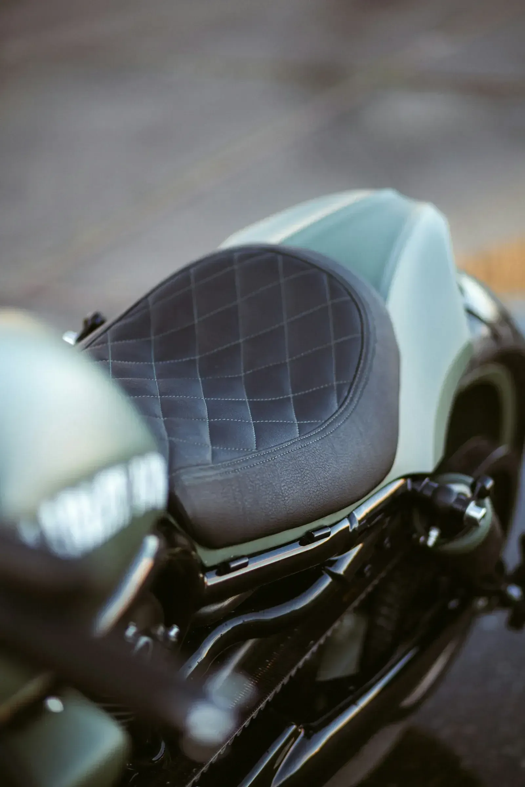

01Gallery
Work out of the Monroe shop
Every piece here was cut, stitched and fitted in house.







02Your project next
See something close to your project?
Bring the vehicle, the boat, or just the seat by the shop and we will give you an itemised estimate at no cost.
Free estimates · In-person quotes · Monroe, NC since 1989